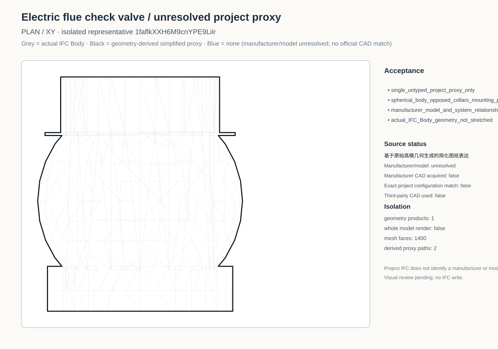
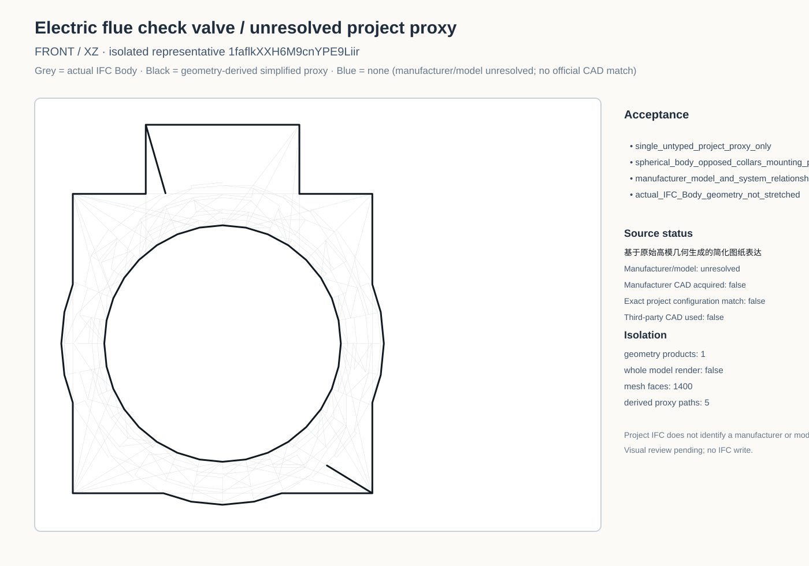
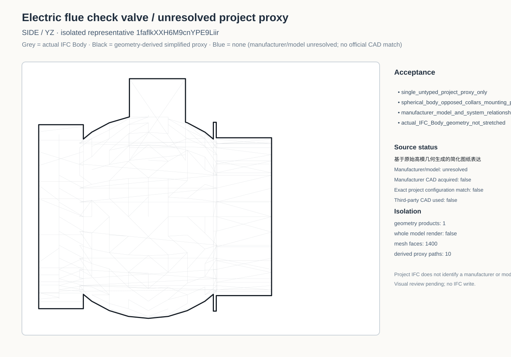
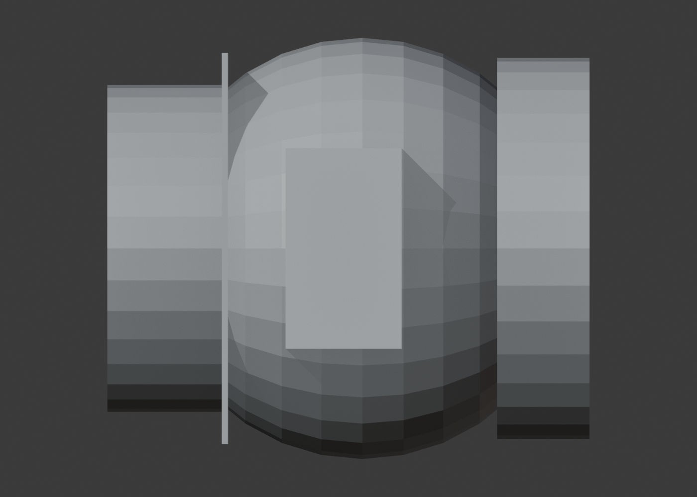
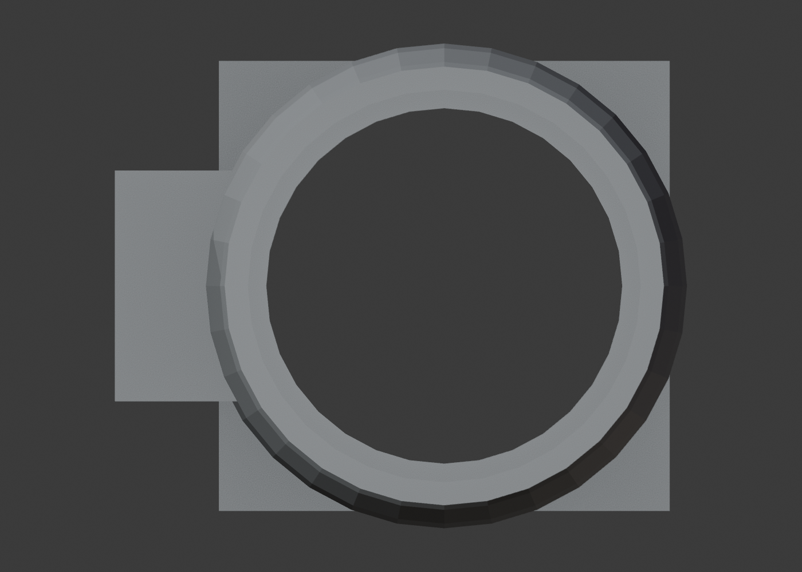
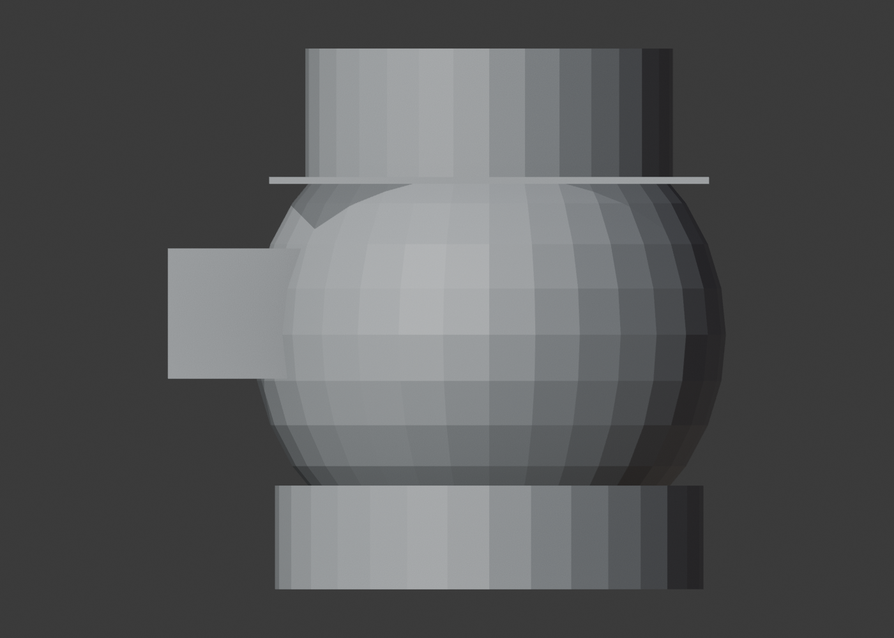
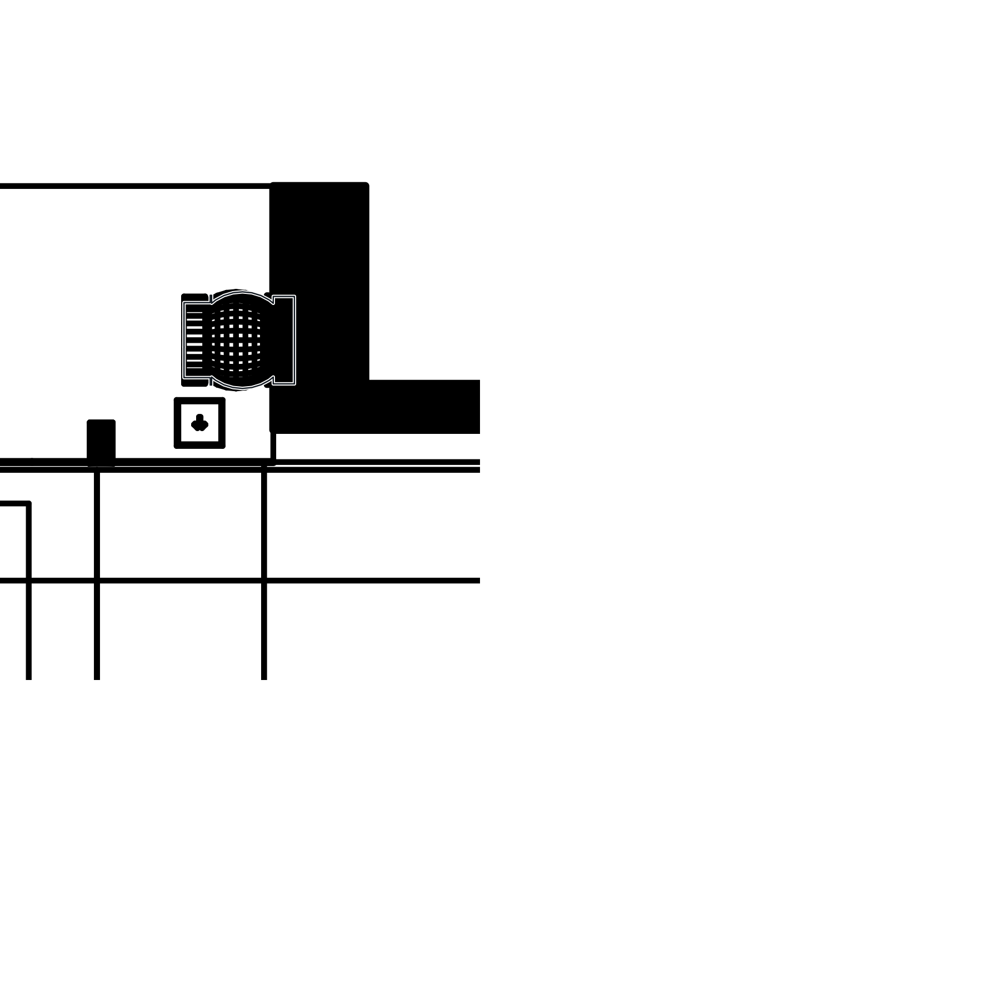
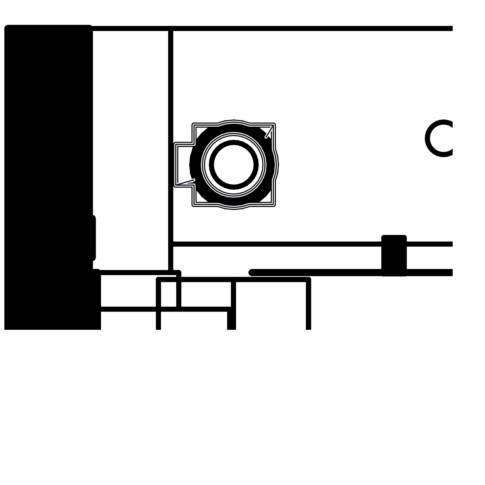
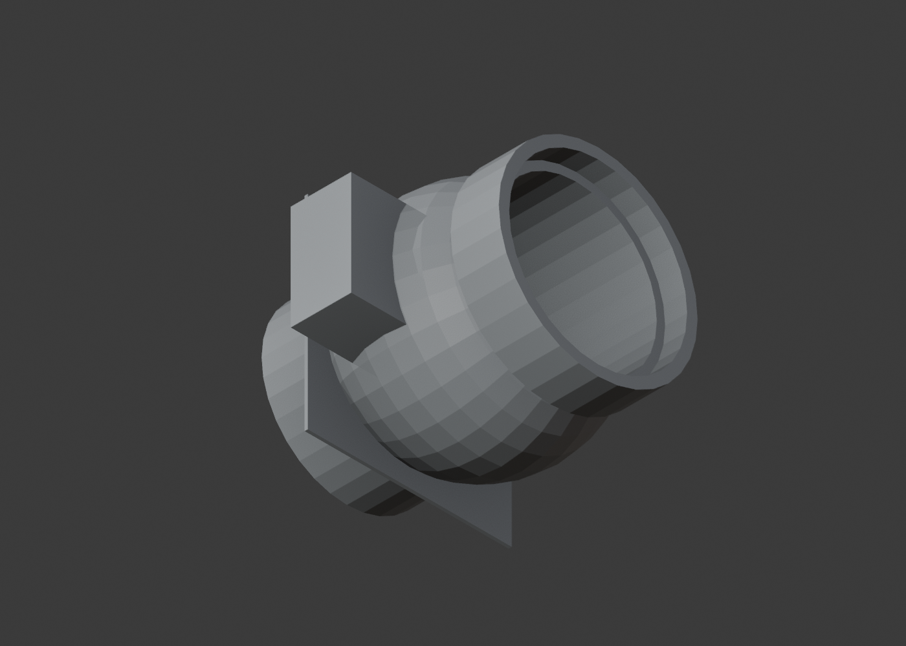

Electric flue check valve review contact sheet
Three-view · Plan

Three-view · Front

Three-view · Side

Bonsai · Plan camera

Bonsai · Front camera

Bonsai · Side camera

Project · R04 +X

Project · R04 −Y

Bonsai · Isometric camera
